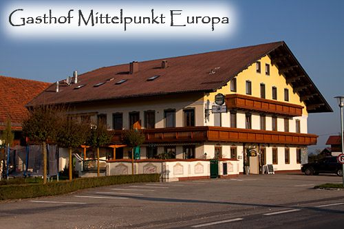

Willkommen im Mittelpunkt von Europa!
Wir begrüßen Sie recht herzlich im Gasthof “Mittelpunkt-Europa”, der Betrieb ist seit Generationen in Familienbesitz.
Der Gasthof liegt im schönen “Mattigtal”
zwischen Braunau am Inn und Mattighofen auf der
B147 im Voralpenland.
Schnell zu erreichen von Salzburg, Linz, Passau, und München.
Wir legen großen Wert auf ein gepflegtes und gemütliches Ambiente für Ihr Wohlbefinden.
Der Gasthof ist weit über die Landesgrenze hinaus für seine Gastlichkeit bekannt, und wird von Jung und Alt sehr geschätzt.